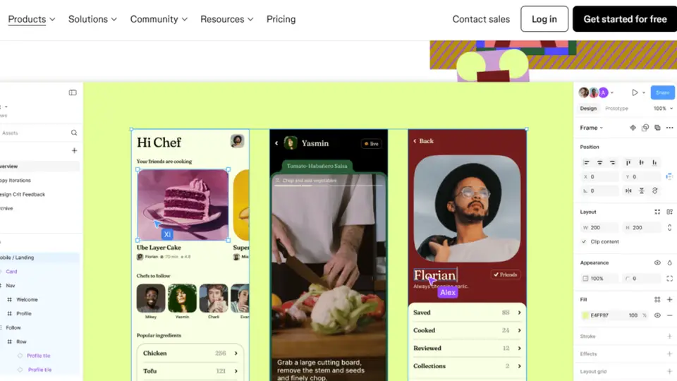
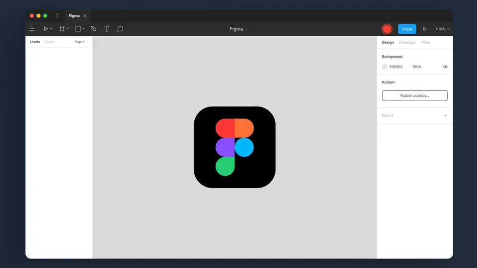

Figma hands agents a rulebook: Specs, code layers in open beta, and 20 MCP integrations debut at Config India
Figma is turning its design system into an instruction manual for AI agents. At its first Config event in India, the design platform announced a wave of agent-focused features: a Markdown-based editor called Figma Specs for codifying design rules, code layers moving into open beta, Payload’s CMS folded into Figma Make, and 20 new integrations for the Figma MCP server — all aimed at making AI agents build on-brand, on-system, and on the canvas.
- Figma Specs is a native Markdown editor where teams codify design rules — Specs can reference canvas elements, embed FigJam diagrams, code layers and designs; agents can bring in outside context and hand specs off via Figma's MCP server.
- Specs starts rolling out today in open beta on web, desktop, and mobile, on all paid plans; code layers (working code directly on the canvas for interactive prototypes) also enter open beta today on all plans, after a private beta earlier this year.
- Teams can add guidelines to published design libraries so agents follow established patterns, and import code sources from a GitHub repo or npm package; guidelines are in open beta, code sources in closed beta, both on all paid plans.
- The Payload team (the open-source content framework that joined Figma last year) folded its capabilities into Figma Make — marketing can manage content without touching source code; Payload downloads grew sixfold in the past 12 months.
- The Figma agent is now generally available on the canvas; the Figma MCP server gets new tools starting today, with improved agent guidance and server performance meant to cut errors and token usage.
- 20 new MCP partner integrations, including OpenCode, the AI-native browser Dia, JetBrains' Junie, and Meta Muse.
- India is Figma's largest user market outside the US; it opened its first India office late last year, and Figma says 40% of India's 100 largest companies listed on the Bombay Stock Exchange use the platform.
What launched
The centerpiece is Figma Specs, a new native home for design context built as a Markdown editor. Specs can reference canvas elements, embed FigJam diagrams, code layers, and designs, so a team’s decisions live alongside the work they describe rather than in a disconnected doc. Agents can bring outside context in, work with a team to turn rough ideas into a detailed spec, and then hand it off via Figma’s MCP server — or build a code layer from it and refine as they learn. Specs starts rolling out today in open beta on web, desktop, and mobile, on all paid plans.
Code layers, which put working code directly on the Figma canvas for interactive prototypes, also roll out in open beta starting today on all plans, after a private beta earlier this year. Figma’s own pitch is that they let teams explore code-backed ideas together on the canvas instead of alone in an IDE — converting existing designs into working code, importing from GitHub, or capturing a live website with Figma’s Chrome extension.

A design system that agents can read
The deeper move is making the design system itself machine-readable. Teams can add guidelines to published design libraries so agents follow established patterns, and import code sources from a GitHub repository or an npm package to help the agent build and edit better components and code layers. Figma is also previewing a dedicated home for the libraries that make up a design system — a system map to track changes and dependencies, and system check to scan for gaps like missing descriptions and interactive states. Guidelines are in open beta; code sources start in closed beta; both on all paid plans.
Then there’s content. The team behind Payload, the open-source content framework that joined Figma last year, has brought its capabilities into Figma Make — so teams can create, manage, and ship web apps together, with marketing able to manage content without touching source code. Payload downloads grew sixfold in the past 12 months, which Figma says makes it the fastest-growing open-source CMS on npm. It’s available on all plans, rolling out to all accounts over the coming weeks.

The MCP wave
Everything in the launch is explicitly agent-native. The Figma agent is now generally available and embedded on the canvas, and Figma is updating the Figma MCP server: starting today, developers can generate code layers and work with specs directly from the AI tools they already use, with improved agent guidance and server performance meant to cut errors and token usage.
Figma is also launching 20 new MCP partner integrations, including OpenCode, the AI-native browser Dia, JetBrains’ Junie, and Meta Muse. The message is that agents no longer just visit Figma through a plugin — they operate inside it, against the design system as ground truth.
The strategy: steer the non-determinism
Figma is unusually candid about the motivation. Its chief design officer, Loredana Crisan, framed the effort as steering AI’s non-deterministic nature toward predictable outcomes — new tooling so agents follow a brand’s rules instead of freelancing. One customer quote in the launch post sums up the pain: “It’s fast, fast, fast... then slow.”
That framing matters because the company expanded access to its canvas agent in the past week, widening the blast radius of exactly the unpredictability these tools are meant to tame. Figma is betting that the design system — the part of product work teams already codify — is the right lever for grounding agents, rather than more prompting or more guardrails bolted on afterward.
Why India
The venue was deliberate. This was Figma’s first Config event in India, and the company says India is its largest user market outside the United States — it opened its first India office late last year covering sales, partnerships, go-to-market, and product support. Figma says its platform is used by 40% of India’s 100 largest companies listed on the Bombay Stock Exchange, per TechCrunch.
Why it matters
The agent era has a context problem: agents are powerful but starved of the rules that make work coherent, and scattered Markdown files are a poor substitute for a real system of record. Figma’s bet is that the design system is that record — and that whoever owns the machine-readable definition of how things should look and behave gets to set the terms for every agent that builds the product. Today’s launch turns that from an idea into product surface: specs, code, content, and an MCP server all wired together.
Sources: Figma Blog: Build by Design: New Workflows for New Ways of Building (Oct 15); TechCrunch: Figma announces new features to define how agents work on its platform (Oct 14).
Frequently asked questions
What is Figma Specs?
A new native home for design context built as a Markdown editor: teams codify design rules there, referencing canvas elements and embedding FigJam diagrams, code layers and designs — so agents follow a team's established patterns instead of freelancing. It's in open beta on all paid plans.
What are code layers?
Working code placed directly on the Figma canvas for interactive prototypes — teams can convert existing designs into working code, import from GitHub, or capture a live website with Figma's Chrome extension. They're in open beta starting today on all plans.
What's new for agents on the Figma MCP server?
The Figma agent is now generally available on the canvas, the MCP server gets new tools (generate code layers, work with specs from your own AI tools) with better agent guidance and performance — plus 20 new MCP partner integrations including OpenCode, Dia, JetBrains' Junie and Meta Muse.